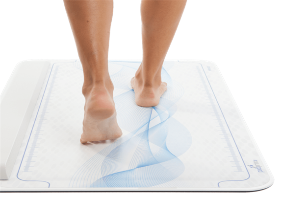
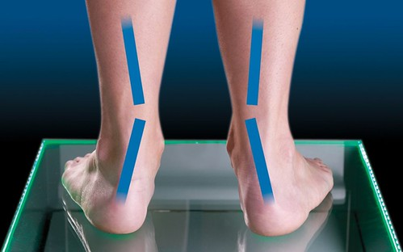

El estudio biomecánico es el análisis de la pisada de los pies en posición postural, estática y dinámica, y la relación de éstos con la rodilla, caderas, columna y forma de apoyar.

Se realiza la exploración y palpación de las estructuras relevantes en consulta, realizando mediciones en el pie. Posteriormente se realiza otra exploración en estática, es decir, de pie, se vuelven a medir estructuras y ángulos y se realizan tests biométricos. Finalmente se realiza una exploración en marcha, para valorar las dos fases de la marcha: apoyo (despegue, apoyo medio y apoyo total) y balanceo.

Se realiza para descartar patologías derivadas del esqueleto y que tienen relevancia y producen sintomatología en el pie. Sirve para poder poner tratamiento o compensar posibles alteraciones en el pie, y prevenir lesiones derivadas de una mala posición del pie, rodilla o espalda. El tratamiento consiste en poner unas plantillas personalizadas para cada pie de diferentes materiales, dependiendo de la actividad física, edad, peso y patología.